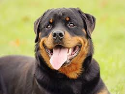

Rottweiler
In isolation, this dog breed might not be the best option for kids. However, to mitigate the risks, have the puppy grow up with kids and provide it with plenty of pleasant and relaxed experiences with them. This breed is also shy toward other pets and shy toward strangers.
- Temperament: Alert, Courageous and Fearless.
- Height: male-95-130 pounds (43-59 kg)
- Colors: Black & Mahogany
- Puppy Price: Average $1200 - $2000 USD
The Rottweiler needs plenty of exercise. You can't give these robust dogs too much work or exercise; they thrive on it. They need to be taken on a daily walk or jog. Running in the woods and in open country makes them very happy and they have no desire to wander from you. Swimming or running beside a bicycle are perfect activities for this dog and it also loves retrieving a ball.